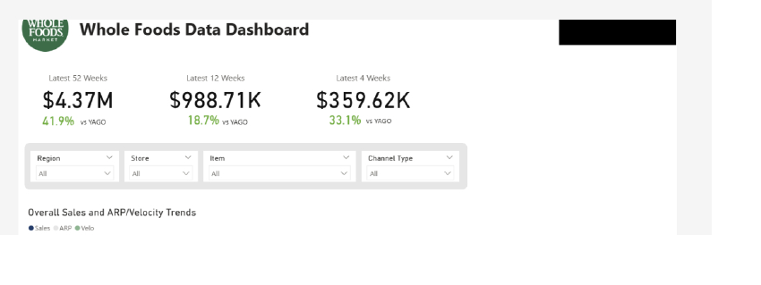
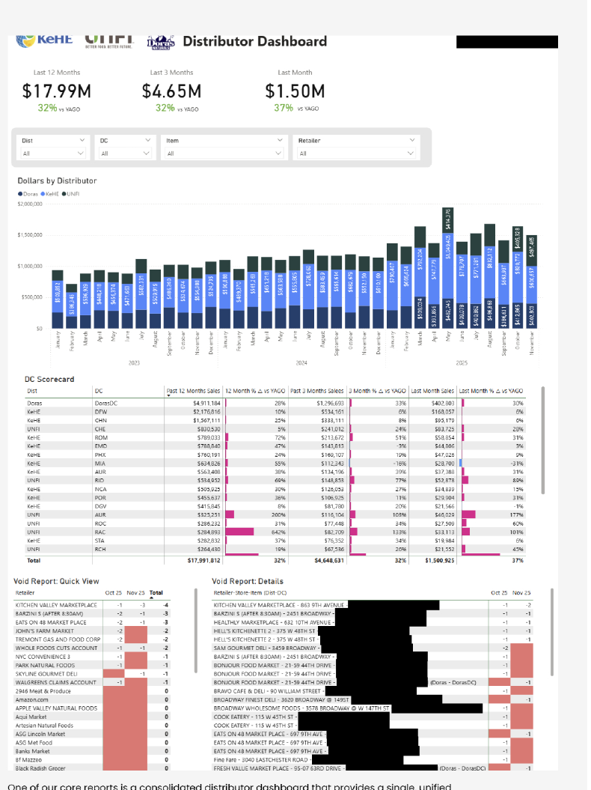
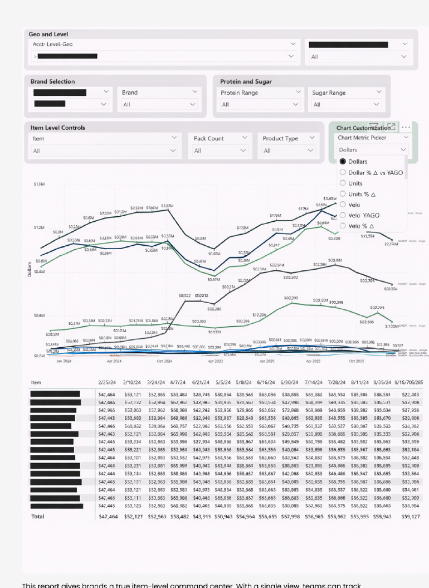
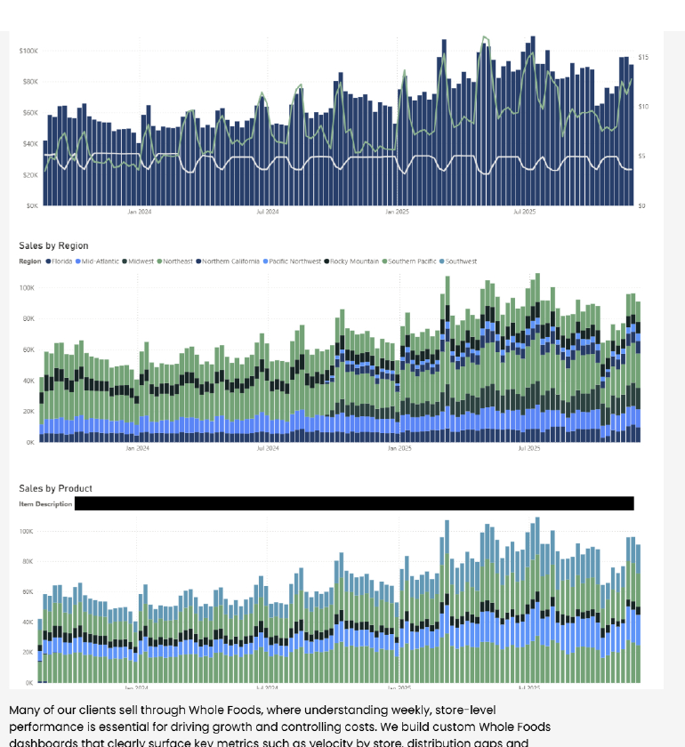

We plug your syndicated, distributor, and retailer data into an AI you can talk to — so anyone on your team can get a straight answer on sales, distribution, or velocity in seconds. No pivot tables, no waiting on an analyst, no dashboard hunting.
Still want a dashboard too? We build those — Power BI, built on the same clean data model.
Sound familiar? You're not alone — most CPG teams we meet are here.
Multiple data sources. No single source of truth.
Dashboards exist, but no one trusts them.
Sales asks questions we can't answer fast.
We're drowning in spreadsheets and weekly fire drills.
Whatever you're sitting on — syndicated exports, distributor portals, direct retailer files — we structure it into one model your team (and your AI) can actually use.
Syndicated data is powerful, but only if it's easy to use. We structure, normalize, and visualize it so teams can quickly understand trends, velocity, distribution, and performance — without digging through spreadsheets or static reports.
Distributor data is messy, inconsistent, and often underutilized. We consolidate feeds from partners like UNFI and KeHE into a single view — making it easy to understand performance by distributor, DC, item, or store, and quickly spot gaps and opportunities.
Whether it's Whole Foods, Walmart, Kroger, or another retailer, direct data can unlock powerful store-level insights. We transform raw retailer files into intuitive views that highlight velocity, distribution issues, and lost sales — so teams know exactly where to focus.
Most CPG data projects stop at a dashboard. We go one step further: we take whatever sources you already have and set them up in AI, so anyone on your team can ask a question and get a grounded, accurate answer back — no analyst, no waiting, no SQL.
Syndicated (SPINS, NielsenIQ, Circana), distributor (UNFI, KeHE, McLane, C&S), and direct retailer files — normalized into one queryable model.
"What drove the velocity drop in the Southeast last period?" Type it like you'd ask a colleague — get a real answer back in seconds.
Every answer traces back to your underlying data — not a black box. You can always see the "why" behind the "what."
We still build the dashboards, too. Here's a look at the kind of reporting we've shipped for real CPG brands.

Many of our clients sell through Whole Foods, where understanding weekly, store-level performance is essential. We build custom dashboards that surface velocity by store, distribution gaps and voids, and lost sales opportunities.

One of our core reports: a consolidated distributor dashboard with a single, unified view of performance across all distributors — down to the individual DC or store — so gaps and voids can be addressed quickly.

A true item-level command center. Teams track dollars, units, velocity, productivity, store count, TDP, and key percent-change metrics for any SKU over time — instead of reacting to topline shifts alone.

Weekly sales trends broken out by region and by product, so teams can see exactly where growth (or softness) is coming from before it shows up in the topline number.
The stuff people actually ask us on the fit call.
Yes. We structure and normalize your syndicated data first, then connect it to an AI layer so you can ask plain-English questions about velocity, distribution, and sales trends and get grounded answers pulled from your real numbers.
No — that's the point. We set up the data model and AI connection so anyone on your team, from sales to marketing to the founder, can ask a question directly instead of waiting on an analyst.
Syndicated data (SPINS, NielsenIQ, Circana), distributor data (UNFI, KeHE, McLane, C&S), and direct retailer files (Whole Foods, Walmart, Kroger, Costco, and others).
They work together. A dashboard is great for tracking known metrics over time. The AI layer is for the unplanned questions that come up in between — "why did velocity drop in the Southeast?" — without waiting for someone to build a new report.
It depends on how many sources you're connecting and how clean the underlying data is, but most engagements start with a scoped build after a 20-minute fit call, not a long open-ended project.
20 minutes. We'll tell you honestly whether we can help.